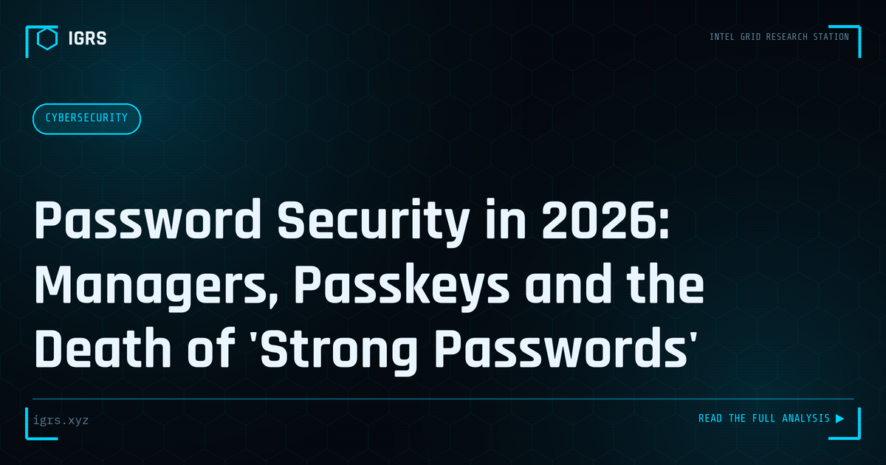

Password Security in 2026: Managers, Passkeys and the Death of 'Strong Passwords'
| File No. | OD-009/2026 |
| Subject | Modern credential security: password managers, passkeys, 2FA hierarchy |
| Category | Privacy & Safety |
| Author | Manuj Kumar Pandey |
| Published | 2026-06-01 |
| Reading time | 6 minutes |
The advice that protected accounts in 2015 is obsolete. What actually prevents account takeover today: unique credentials, the right kind of 2FA, and passkeys.
The threat changed; the advice didn't
Most password guidance still fights the last war — attackers guessing passwords. In reality, the dominant takeover methods today are credential stuffing (trying email–password pairs leaked from one breach against every other service), phishing (you type the real password into a fake page), and SIM-swap attacks against SMS codes. Complexity rules ("one capital, one symbol") do nothing against any of these. What works is structural.
Rule 1: Unique beats complex
A reused password is a skeleton key: one breached shopping site exposes your email, bank and social accounts simultaneously. A unique password per service contains every breach to that service. Length also beats symbol soup — a four-word passphrase like a random combination of unrelated words is both stronger and more memorable than P@ssw0rd1 variants. But the real answer is that you should not be memorising passwords at all.
Rule 2: Use a password manager
A password manager generates and stores a unique random password for every account behind one strong master passphrase. Reputable options (open-source ones like Bitwarden and KeePassXC, or built-in managers from Apple and Google) encrypt your vault so even the provider cannot read it. Two objections, answered:
- "What if the manager is breached?" Properly designed managers store only encrypted blobs; without your master passphrase the data is useless. The risk of one hardened vault is vastly lower than the risk of reusing passwords across fifty sites.
- "Single point of failure?" Yes — so protect it accordingly: a long master passphrase, two-factor authentication on the vault, and printed recovery codes stored safely offline.
A side benefit nobody mentions: a password manager is anti-phishing armour. It autofills only on the exact, legitimate domain — if it refuses to fill on a login page, treat that as an alarm.
Rule 3: Not all 2FA is equal
Two-factor authentication ranks, from weakest to strongest:
- SMS codes — far better than nothing, but vulnerable to SIM-swap fraud (an attacker ports your number) and phishing relays. Acceptable as a floor; avoid for high-value accounts where alternatives exist.
- Authenticator apps (TOTP) — codes generated on your device; immune to SIM-swap, still phishable in real time by sophisticated fake pages.
- Hardware keys and passkeys (FIDO2) — cryptographically bound to the genuine website. A fake site cannot harvest them even if you are fooled. This is the current gold standard.
Passkeys: what they are, in plain terms
A passkey replaces the password entirely with a cryptographic key pair: the private key stays on your device (unlocked by your fingerprint, face or PIN), and the service holds only the public half. There is nothing to phish, nothing to leak in a server breach, nothing to reuse. Google, Apple, Microsoft, major banks and most large platforms now support them, with keys syncing across your devices. Where a service offers a passkey, take it — and keep one backup sign-in method plus recovery codes in case you lose your devices.
Your one-hour upgrade plan
- Install a reputable password manager; set a long master passphrase.
- Fix the crown jewels first: primary email, banking/UPI, and Apple/Google account — unique passwords, strongest available 2FA, passkeys where offered. Email first: it resets everything else.
- Check your addresses on Have I Been Pwned; rotate anything breached or reused.
- Move SMS 2FA to an authenticator app on important accounts; print recovery codes.
- Thereafter, migrate other accounts opportunistically — each time you log in somewhere, let the manager replace the old password.